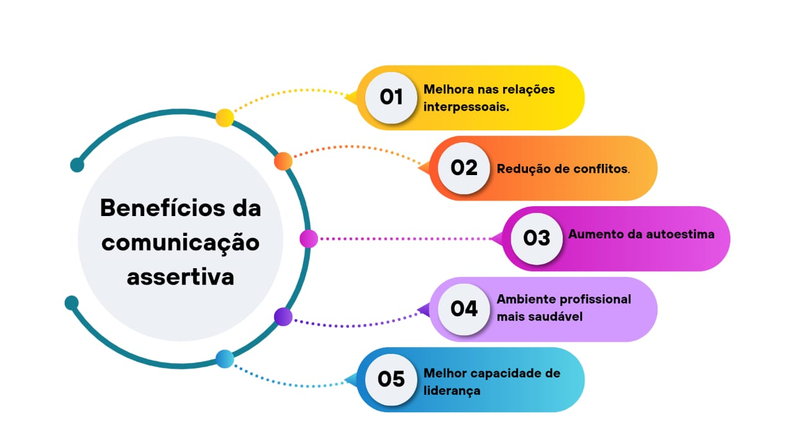
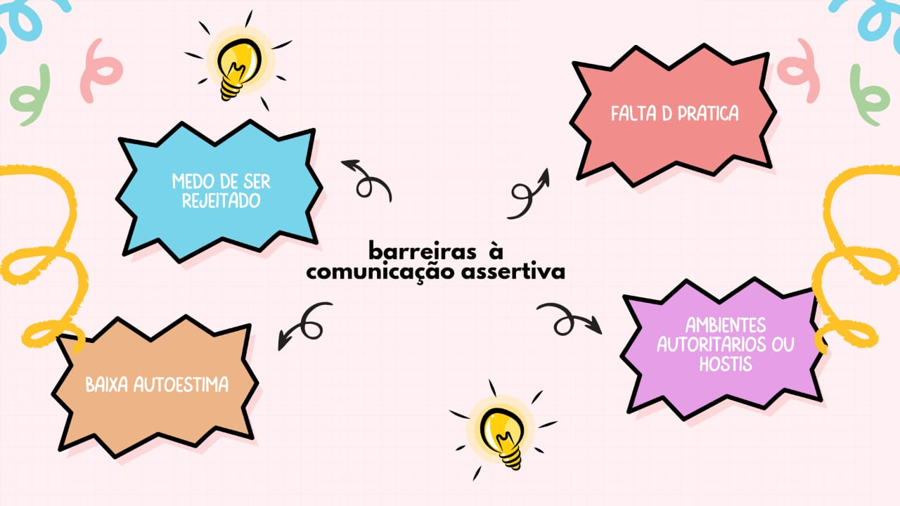
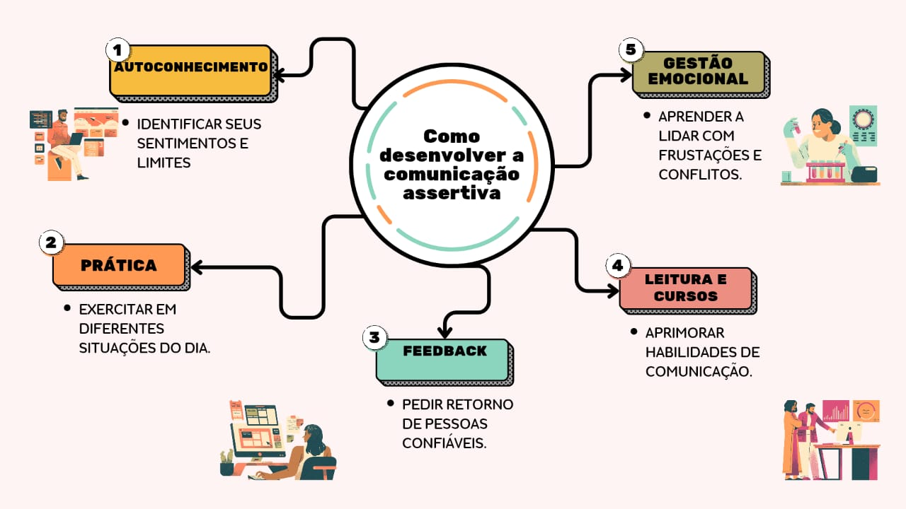
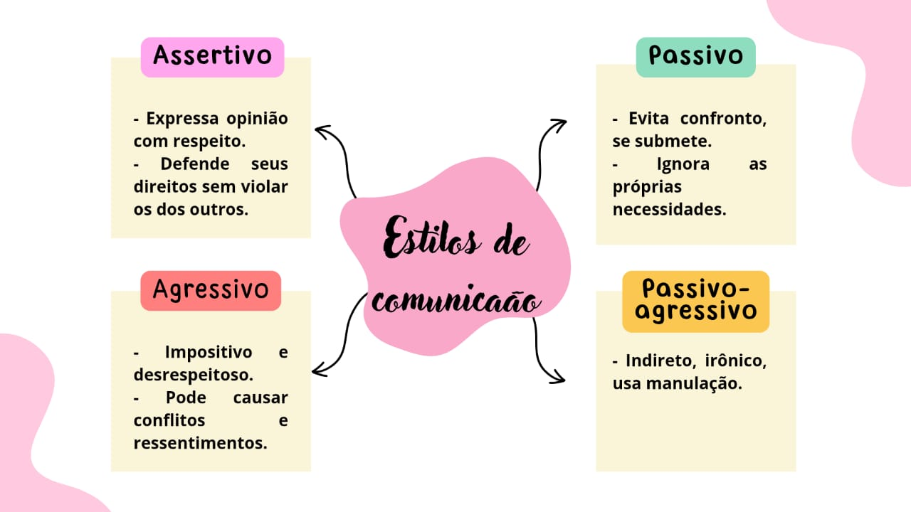
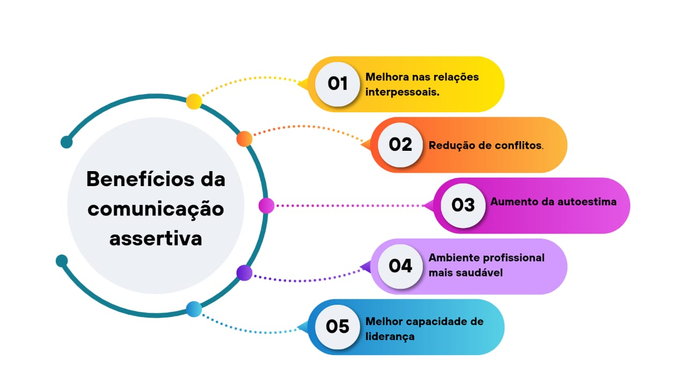
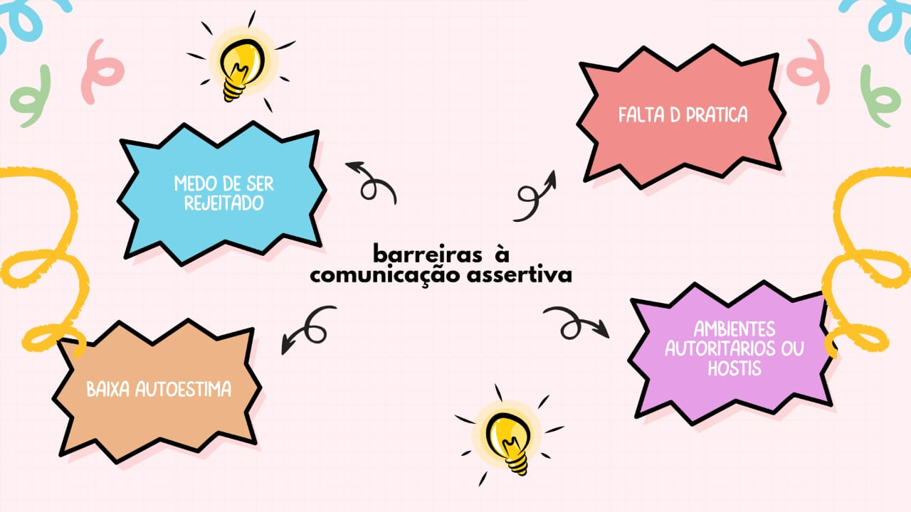
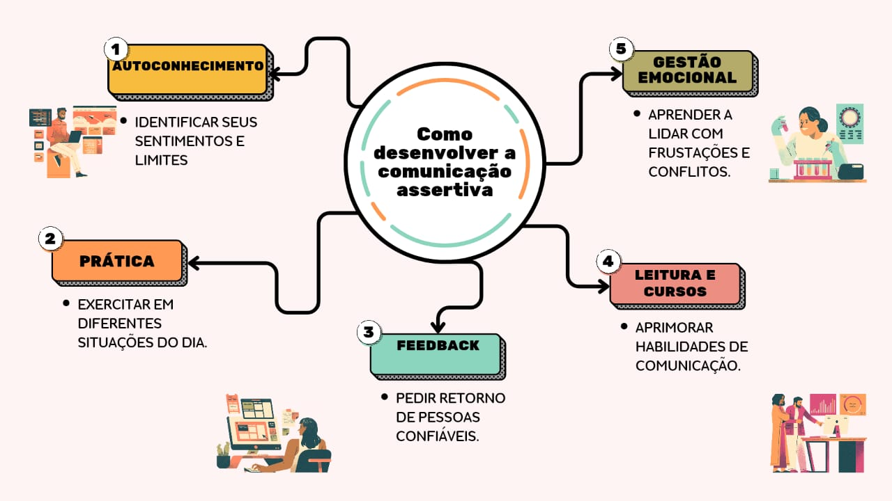
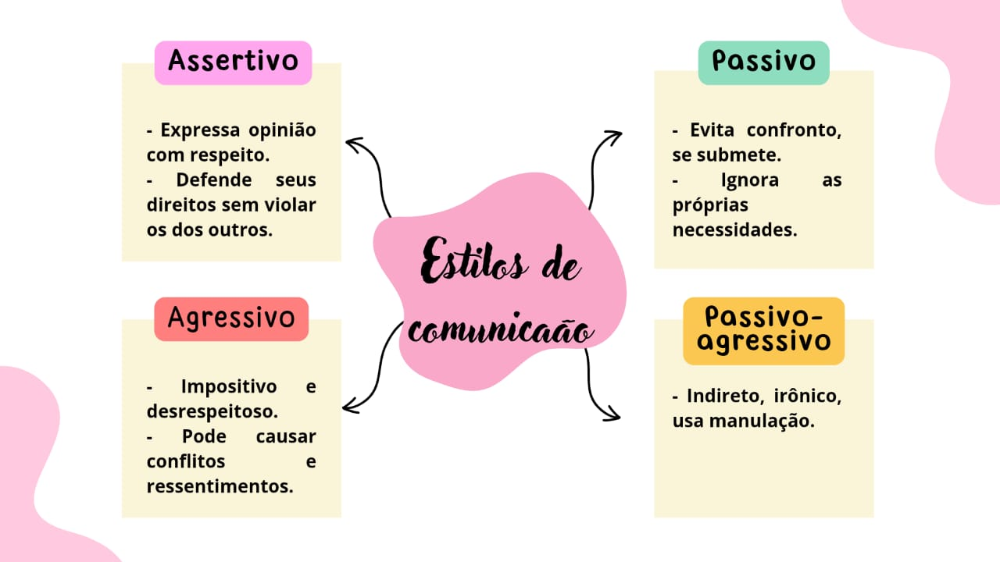

O que é comunicação assertiva na saúde ?
Comunicação assertiva é a capacidade de expressar ideias, sentimentos e necessidades de forma clara, direta,
respeitosa e empática, sem agressividade ou passividade. No contexto da saúde, essa habilidade é fundamental
para garantir uma troca eficaz de informações entre profissionais, pacientes e equipes multidisciplinares.
Quando aplicada de maneira adequada, a comunicação assertiva contribui para a construção de vínculos de
confiança, redução de erros, melhora na tomada de decisões e na segurança do paciente, promovendo uma
assistência mais eficiente, humanizada e de qualidade.
 DICAS RÁPIDAS: COMUNICAÇÃO ASSERTIVA NA PRÁTICA
Explore nossas dicas com orientações simples e objetivas sobre como se comunicar de forma clara, respeitosa e
eficaz no ambiente de saúde. Uma forma dinâmica de aprender e aplicar a comunicação assertiva no dia a dia
profissional.




DICAS RÁPIDAS: COMUNICAÇÃO ASSERTIVA NA PRÁTICA
Explore nossas dicas com orientações simples e objetivas sobre como se comunicar de forma clara, respeitosa e
eficaz no ambiente de saúde. Uma forma dinâmica de aprender e aplicar a comunicação assertiva no dia a dia
profissional.



